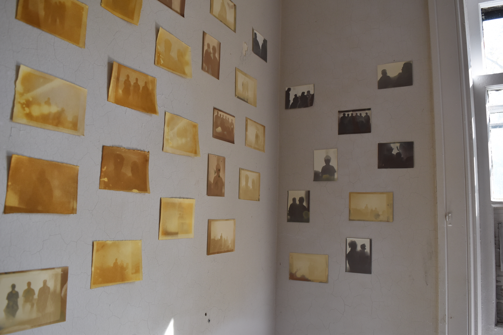
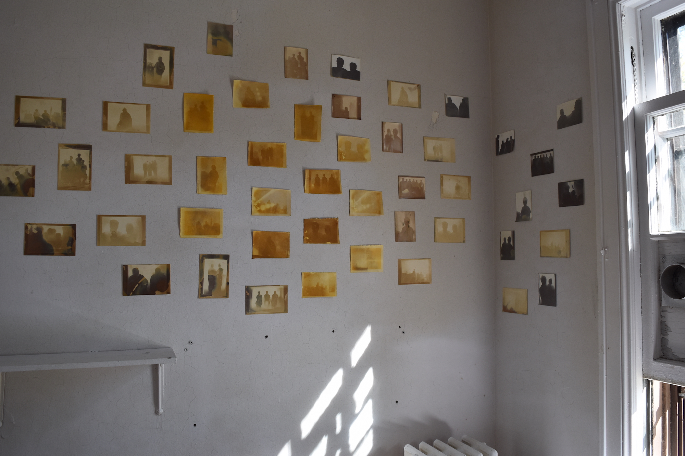
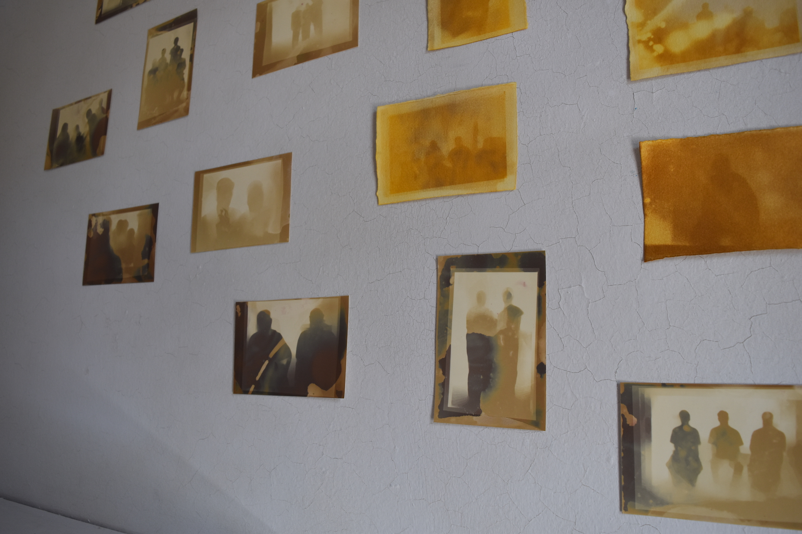
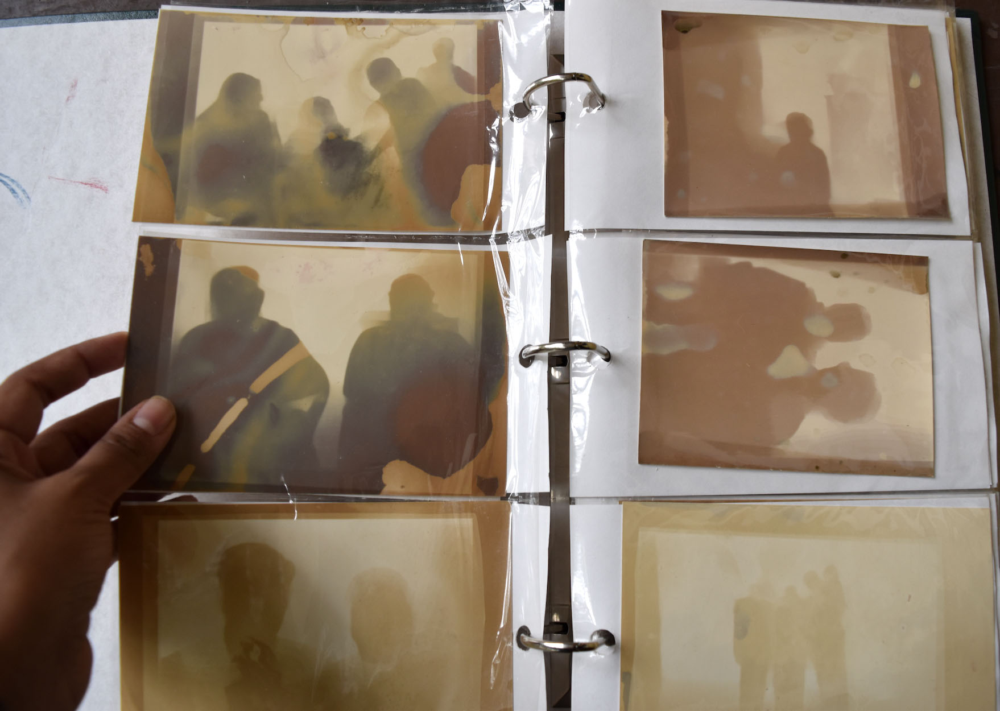
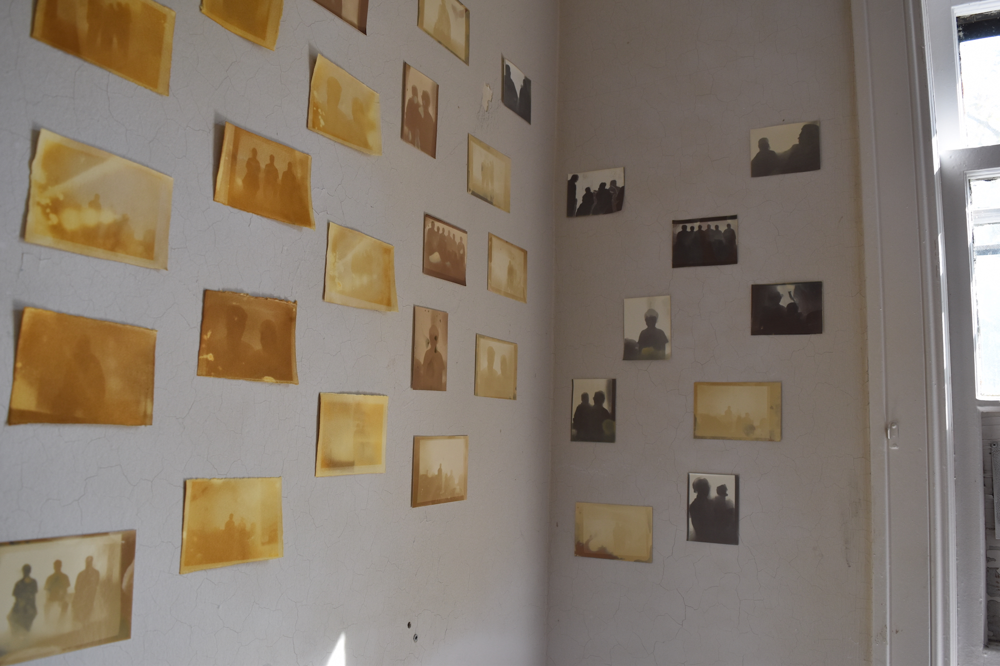
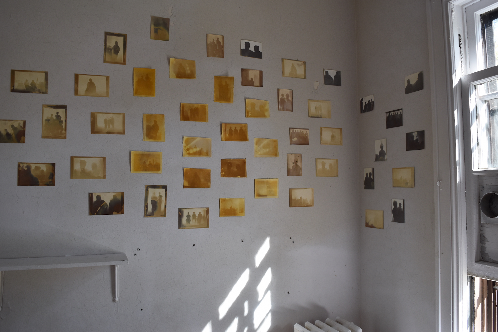
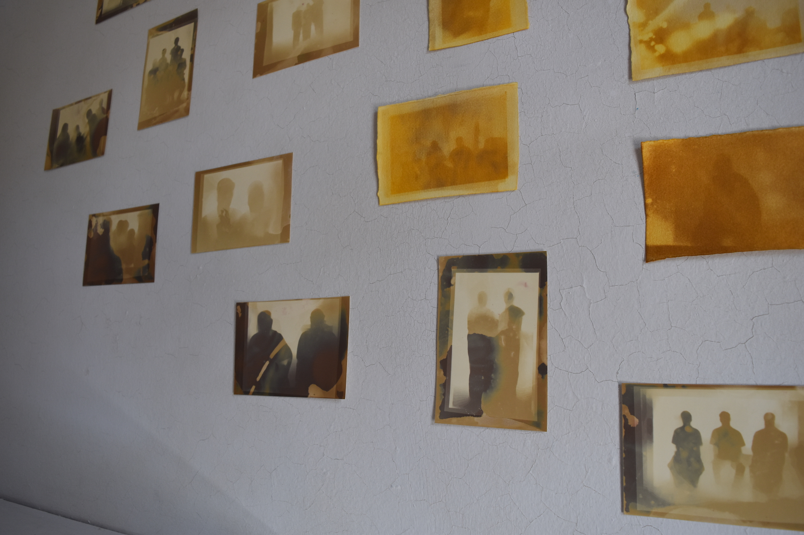
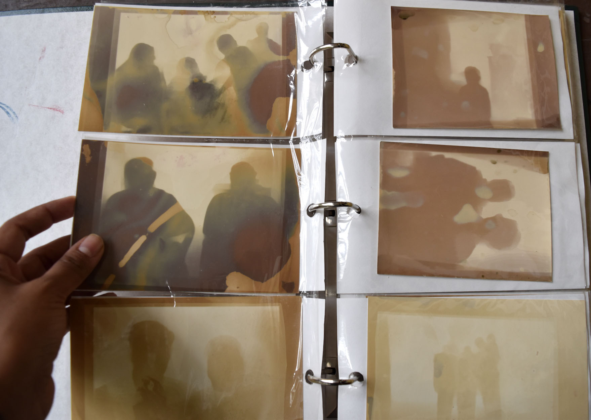

Recollections in Haldi & Light
2020 - Code, Lumen Prints, Turmeric Anthotypes


 Installation view.  Installation view.  Installation view.  Album.
← back to selected work
Recollections in Haldi & Light uses a pre-trained machine learning depth-detection model to create silhouettes from my family photographs. These silhouettes are then used to produce digital negatives and printed on expired photo paper and turmeric anthotypes. The prints are meant to evoke a sense of shared memory and loss. The use of the turmeric anthotype process brings a ritual dimension to the work as turmeric (haldi) is considered an auspicious material and is also a familiar element in South Asian cuisine and culture.
 Installation view.  Installation view.  Installation view.  Album.
← back to selected work